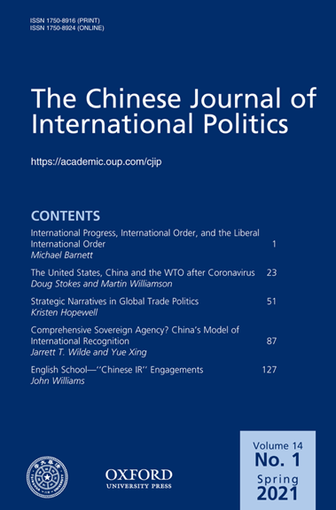
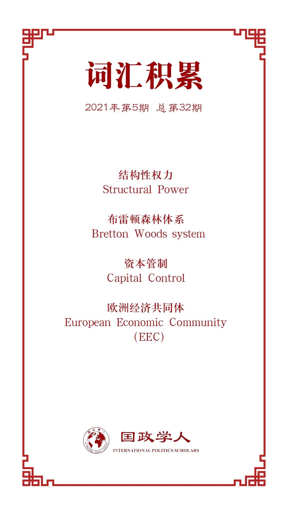

收录于合集

作品简介
【作者】 Doug Stokes: 英国埃克塞特大学教授
Martin Williamson：英国埃克塞特大学高级国际研究中心高级研究员
【编译】 李思（国政学人编译员，首尔大学）
【校对】 李月云
【审核】 姚寰宇
【排版】 石寒冰
【美编】 李九阳
【来源】 Doug Stokes, Martin Williamson. “The United States, China and Wto after Coronavirus.” The Chinese Journal of International Politics Volume 14, no. Issue 1, Spring 2021 (2020): Page 23-49.
【归档】 《国际关系前沿》2021年第5期，总第32期。
期刊简介

《中国国际政治杂志》（ The Chinese Journal of International Politics ）是牛津大学出版社出版的经同行评议的学术季刊，以现代方法论、历史、政策研究为主要内容，多数文章与中国及其外交政策相关。该期刊致力于为有关问题的学术交流提供平台，2019年影响力因子为1.897。
The United States, China and the WTO after Coronavirus
后疫情时代的美国，中国与WTO
文章导读
霸权国家可以摧毁其国际机制，但如果它没有能力按照自己的意愿重建一个机制的话会发生什么呢？基于结构性权力理论，本文考察了历史上尼克松对布雷顿森林国际货币机制的攻击，以帮助阐明特朗普对世界贸易组织（WTO）的攻击。在这两个案例中，破坏原有机制在很大程度上是为了遏制竞争对手：尼克松想遏制欧洲，特朗普想遏制的是中国。本文表明，虽然美国拥有足以破坏布雷顿森林体系的负结构性权力（negative structural power），但它缺乏足够的正结构性权力（positive structural power）来创造尼克松所希望的新货币结构。特朗普也面临着类似的困境：他可以妨碍WTO机制，但不一定能用一个适应美国偏好的机制来取代它。中国太过强大，且拥有太多结构性权力，因而不可能在毫无抗争的情况下就放弃其在WTO的优势。在新冠疫情之后，中国不太可能阻止美国破坏WTO，但很可能会阻止美国试图建立一个独利于美国的继承机制。
01
理论体系的破坏
本文讨论了为什么霸权国家会破坏其建立起的机制，并提出了正负结构性权力的概念。本文认为，霸权国通过维持一种最适合霸权国需求的国际秩序（对美国来讲是自由和市场导向的国际秩序)，同时通过将维持秩序的部分或全部成本转嫁给其他国家，以此来增强霸权。本文还认为，霸权国会行使结构性权力，苏珊·斯特兰奇（Susan Strange）将结构性权力定义为一种塑造和决定全球政治经济结构的权力。在此基础上，本文作者将结构性权力进一步区分为正结构性权力和负结构权力。负结构权力是指一个国家通过阻碍现有国际结构和制度的运作，或阻碍其它国家改变现有结构的尝试而影响其他国家行为的能力。正结构性权力是指一个国家修复现有的国际结构和制度或创立新的国际制度的能力。
首先，关于布雷顿森林体系消亡的原因，学界没有达成一致的意见。与自由派学者、现实主义者和马克思主义学者不同的是，本文认为：美国对外经济政策的目标是改革布雷顿森林体系（Bretton Woods），在保留固定汇率制的同时使其更具灵活性，并使各国能够保留资本管制。但这一目标被美国在1973年“欧洲年（Year of Europe）”谈判中以欧洲和日本为代价实现美国安全和经济利益的外交政策目标意外地推翻了。尼克松认为，在欧洲谈判年取得成功的最佳方法是通过破坏欧洲经济共同体(EEC)在货币联盟上的首次尝试来阻碍欧洲一体化，削弱顽固的欧洲经济共同体，从而使得美国的正结构性权力能够战胜分裂的欧洲，而欧洲无法有效地调动其日益增长的负结构性权力。美国本以为对国际货币机制的破坏是暂时的，在美国进行国际货币改革后就能愈合，但当石油输出国组织（OPEC）控制了世界石油市场后，尼克松的损害变成了永久性的。
02
1971-1973年国际货币机制的破坏
美国在1944年创立了布雷顿森林国际货币体系，尼克松总统在1971-1973年摧毁了它。在1972-1974期间，美国在C20中就华盛顿改革国际货币机制的计划寻求国际支持。该机制将再次以固定汇率和资本管制为基础，但与布雷顿森林体系不同的是，它以特别提款权（SDR）取代美元，成为该制度的计价标准和主要储备货币。由于OPEC打乱了美国的货币改革计划，临时浮动汇率意外地变成了永久汇率。1973年，OPEC控制了世界石油市场，提高了油价，这使得回归基于固定汇率和严格控制资本流动的货币制度不再可能。美国及其盟友被迫放弃了他们相互竞争的详尽计划，转而用一种新的固定汇率体系取代布雷顿森林体系，该体系由强大的资本管制支撑。需要强调的是，是OPEC的行动限制并塑造了布雷顿森林的继承体系，确保了其建立在浮动汇率和资本自由流动的基础上。这一结果于1976年被国际货币基金组织（IMF）所有成员国接受，突显了美国的正结构性权力的不足。美国缺乏它所需要的正结构性权力来履行霸权的关键角色，即创建和维护国际秩序。
尼克松曾尝试寻求补救办法。尼克松认为，美国未能充分利用其国际货币和贸易机制，未能充分利用其在西方联盟中的军事主导地位来实现美国的经济利益。他希望通过创建一个新的国际论坛来纠正这一问题，在这个论坛中，欧洲、日本和美国可以共同讨论贸易政策、汇率和防务费分担问题，而不是在三个不同的机制—关税及贸易总协定（GATT）、国际货币基金组织（IMF）和北约（NATO）中分别解决这些问题。他希望通过该论坛，美国在国际贸易和货币关系中能更好地发挥其军事优势，但最终没能得到欧洲和日本的回应。无论当时还是后来，欧洲都没有在这方面与尼克松合作，在货币领域也几乎没有合作，欧洲人担心尼克松提出的汇率改革会削弱他们的竞争力。而日本则乐于躲在欧洲后面。尼克松未能通过与欧洲和日本的合作实现自己的目标，这说明，美国的正结构性权力已严重衰退。总之，在1971年至1974年间，美国未能在创造和维护国际秩序方面扮演霸主的核心角色。
03
特朗普对WTO制度的攻击
本文认为，特朗普的处境与当时的尼克松非常相似。他领导下的美国拥有足够的负结构性权力来破坏WTO体制，因为WTO体制正是推动中国崛起为经济强国的基础。然而，尽管美国缺乏独自建立一个更符合美国利益的新贸易机制所需的正结构性权力，但2020年的新冠疫情提供了一个独特的重构国际秩序的机会，因为世界各国都在质疑他们对中国关键商品制造业的严重依赖。
美国对于WTO的不满的根源于两个方面：贸易争端解决机制的薄弱，以及中国在2001年加入WTO。争端解决程序给美国带来了问题，部分原因是因为WTO常常不能迅速作出裁决，也因为上诉机构的裁决经常违背美国利益。另外，由于WTO规则很难改变，美国认为，WTO上诉机构的法官在没有寻求成员国政治同意的情况下，通过自身对规则的解释实际上改变了WTO的规则。美国对WTO的负结构性权力并不像美国政府在1995年所认为的那样根深蒂固。
中国在2001年加入WTO给美国带来了更大的问题。加入WTO要求中国将关税降低到不超过10%，远低于发展中国家的平均水平。但中国加入WTO是出于计划经济的传统。长期以来，中国政府一直将国家直接干预资源配置决策置于优先地位，而不是通过市场决定的政策工具（如市场决定的价格、利率和自由浮动汇率)）进行间接干预。1945年后，中国主要的贸易壁垒一直是非关税壁垒，因为价格在计划经济中扮演了次要角色。中国政府没有从根本上改变自己的行为，而是通过与WTO的规则进行博弈，找到了适应其经济干涉传统的方法。
特朗普的总统竞选战略把全球化给美国就业和生活水平带来的压力与来自中国的竞争压力混为一谈。和尼克松一样，特朗普赢得选票的部分原因是，他承诺美国优先，应对其他国家的“不公平”的贸易竞争。他认为通过将美国的海外投资转移回美国来增加在美国的投资是增加就业岗位、提高生活水平，以及重建美国相对实力的关键。在国际上，特朗普认为，他的最佳谈判策略是与其他国家进行双边谈判，因为美国对这些国家拥有最大的相对实力优势，而不是基于国际规则（会相对地削弱美国的实力）。
特朗普对WTO体制的攻击有两种形式。首先，他拒绝批准贸易争端解决程序的法官任命。就像尼克松在1971年征收的10%的进口附加税一样，此举意在迫使其他国家重视美国的关切。第二，特朗普破坏了WTO的关税和最惠国原则。他利用“国家安全”法律漏洞，为自己武断地对美国钢铁和铝进口征收关税提供了理由。当其他国家以新关税进行报复时，他迅速且有选择地升级了关税战争，把矛头对准了中国，理由是中国盗窃知识产权，为国有企业出口提供财政支持。
特朗普政府的的国际经济政策有两个主要目标，一个是国内政治目标，另一个是地缘政治目标。其国内政治目标是捍卫和促进那些经济前景因全球化而受到损害的选民的利益。这些选民希望特朗普帮助美国创造就业机会，提高生活水平，尤其是改善由于全球化压力导致的失业和工资下降的情况。地缘政治目标是特朗普政府可能将欧盟视为美国的主要贸易“敌人”，但将出口驱动经济快速增长的中国视为对美国主导地位的主要威胁。特朗普淡化了他们在美国对外经济政策中追求绝对利益的倾向，而是追求相对利益。为此，他将美国的霸权战略从奥巴马青睐的以共识为基础的方式（通常旨在通过国际合作为美国获得绝对利益）转向以美国主导和双边行使权力的方式。
04
结论
2020年新冠疫情可能会加速本研究的趋势。首先，如果没有一致的全球解决方案，新冠疫情可能会导致世界经济秩序的分裂。具体来说，全球经济可能回归到两极世界。从贸易的角度来看，将出现类似于冷战期间前苏联的经济互助委员会（COMECON）和美国领导的经济合作组织（OECD）之间的对峙，发展中国家则根据自己的需要站在其中一方。中国已经在新冠疫情后的全球博弈中走在了前列，为疫情严重的发展中国家提供了大量援助。其次，如果世界划分为相互竞争的区域贸易集团，英国、欧盟、范围更广的英语圈和日本可能会加入美国的“阵营”。中国在发展中国家中可能会赢得更多盟友，尤其是在亚洲部分地区、中东和前苏联地区。但印度由于历史原因和许多其他英联邦国家、法语国家、拉丁美洲国家，以及中东的大部分国家，可能会站在美国一边。第三，如果世界以这种方式排列，贸易主要是在两个区域贸易集团内，而不是在它们之间进行，稳定的供应货源的竞争将会很激烈。美国贸易集团内部的情况可能类似于19世纪的世界，各国通过正式和非正式的殖民，或通过它们的“国家冠军（national champion）”公司竞争资源，但在21世纪，竞争将通过海外直接投资，而不是正式的殖民。美国和中国都不具备足够的正结构性权力来避免这种情况发生。一旦形成这种局面，在后疫情时代国际关系僵化的刺激下，世界将变得更加贫穷，更加动荡。
译者评述
译者认为，本文通过对在尼克松政府时期与特朗普政府时期，美国在创造和维护国际秩序方面扮演的角色和力量进行分析，为预测在一个更加复杂和动荡的后新冠疫情时代中，美国是否会延续历史上尼克松和特朗普政府时期的对外政策提供了借鉴。
通过本文的研究，尼克松和特朗普政府对国际机制的破坏的共同点可以总结为：当国内的经济竞争力下降时，他们都选择把责任归咎于国际机制的薄弱和其他国家。当美国获得的“相对利益”受到威胁时，尼克松和特朗普的第一选择是为了遏制竞争对手而破坏原有机制。欧洲于尼克松，正如中国于特朗普。这间接说明了美国无论是在过去还是现在，作为霸权国家在创建和维护国际秩序中凸显出的结构性权力的不足。
译者认为，在后新冠疫情时代的全球博弈中，影响世界经济秩序最关键的两个焦点是：第一，美国新登场的拜登政府是否会延续特朗普时期的对外政策；第二，中国是否具有足够的结构性权力来应对。通过拜登今年2月在国务院发表的第一次政策演说可以推测出，拜登政府不会明显偏离特朗普政府时期的政策。截至目前，美国的当务之急依然是解决国内问题，修复与盟友的关系。在与中国的贸易争端问题上，拜登虽表达了严肃地将中国作为“严峻的竞争者”来看待，也声明了不会撤销目前在贸易战中美方对中方出口产品征收关税的政策，表示会与盟友一起想方法制衡中国，但在具体行动和方式上展现出了与特郎普政府的不同。拜登政府的重点则放在了加强知识产权保护，同时在符合共同利益的课题上也表达了愿与中国展开合作的意向。拜登是全球化的支持者，信奉多边主义，也被评价为是一名制度主义者，比起贸易，人权问题和地区安全是他更关注的话题。因此，特朗普政府的单边贸易税不会是拜登政府的首选武器，拜登政府更可能通过多边方式与盟友一起制衡中国，并通过支持改革世贸组织来向中国施压。至于拜登政府如何将贸易与更广泛的经济和地缘政治目标联系起来，目前还不能得到确认。
拜登通过首场外交政策演说表达了“美国回来了”的外交基调，也暗示了对华强势政策的延续，关于中国是否具有足够的结构性权力去应对，译者认为，一方面，中国不再是一个维持现状的国家，中国不满当今世界体系建立在美国指定的规范和价值观之上是事实。另一方面，中国不会全盘推倒美国领导的世界秩序，而是寻求改革完善一个更包容更多元的国际机制，而不仅仅遵循少数国家规定的所谓的基于规则的世界秩序。外界大部分对中国的评价是：一方面，中国通过对自由贸易和多边制度的支持捍卫现有的自由主义秩序，同时不甘于从属于其中，另一方面寻求创建扩大话语权和主导权的国际机制又似乎在挑战自由主义秩序。关于如何打破这一困境，译者认为，中国需要至少在亚洲范围内，给予想达到的目标和想创建的规范以及如何将维护一个更明确的定义，对于中国能提供怎样的国际公共物品给外界，尤其是部分发展中国家和其他中小国家一个更清楚的交代，从而避免出现本文作者预测的在后新冠疫情时代可能出现的两极对峙的全球经济，避免陷入单纯从现实主义出发的权力转移的讨论中。
词汇整理

文章观点不代表本平台观点，本平台评译分享的文章均出于专业学习之用, 不以任何盈利为目的，内容主要呈现对原文的介绍，原文内容请通过各高校购买的数据库自行下载。
好好学习，天天“在看”